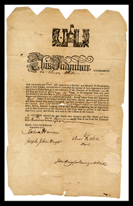
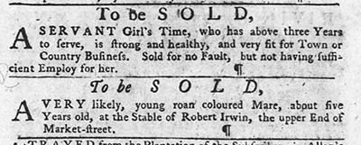
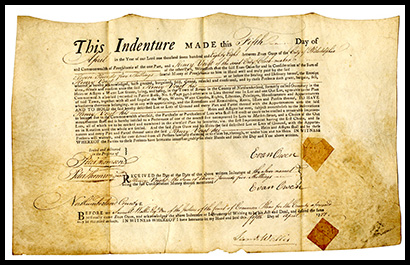

What is Indentured Servitude?
Indentured servitude was prevalent in America from the early 17th Century to the early 19th Century. During the 18th Century, approximately half of all migrants from Britain, Ireland, and other parts of Europe made their way to North America by becoming indentured. An indenture was a contract that bound an individual to a master for a fixed period of time. The indentured person - woman, man or child - would work for a specified number of years and in exchange, the master would provide them food, shelter, and occasionally "freedom dues."1 At the end of the contract, the individual would be released from their indenture and become a free person.2
It is essential to note a few of the differences between indentured servants and racial slavery, which were concurrent practices. Servants would eventually gain their freedom, whereas African American slaves would not. Slavery was a hereditary condition, as the children of female slaves were also slaves, but that was not true of servants. Servants were overwhelmingly white, whereas nearly all slaves came from Africa (although some Indians were enslaved as well in early America).3

{kind=link}
{kind=link}
{kind=link}
{kind=link}
- An indentured servant would sign a contract before they embarked upon their journey to the American colonies, usually with the captain of the ship that would transport them there. The contract would promise payment for their passage through the sale of this contract.3 Upon arrival in America, the captain would sell the contract, usually to the highest bidder.
- A redemptioner would not sign a contract before leaving but instead they would have a few days, upon arrival, to find a master. However, if they were unsuccessful, the ship’s captain would be entitled to act as if they were an indenture. Many of these people came from an area that is now part of Germany.5
- An apprentice most likely came from the local area around Philadelphia and thus were not transported from abroad. They and/or their fathers would also sign a contract, however theirs would sign also sign a contract, however theirs would specify the trade or skill they were to learn during their period of indenture.6 Many boys (and some girls) were apprenticed when they were twelve or thirteen and served until they were twenty-one. Apprentices were also forbidden from giving away any secrets of their trade.
How were people recruited into
contracts of indenture?
- 
- There were many ways in which individuals entered into contracts of indenture servitude. The marketplace for indentured servitude was wide ranging and it is no surprise that the most effective way to recruit for and advertise the sale of indentures on both sides of the Atlantic, was in colonial newspapers. In Great Britain, advertisements were placed in newspapers to recruit prospective indentures while complementary ads were placed in newspapers in the Colonies to alert potential masters of their arrival. Interested parties would be present at the port in order to broker contracts of indenture upon the ship’s arrival. Agents were also known to kidnap young boys and force them to into an indenture contract against their will.
{kind=link}
{kind=link}
{kind=link}
{kind=link}
{kind=link}
{kind=link}
{kind=link}
Why did people enter into contracts of indenture?
Most people traveled to America in pursuit of a better life or out of desperate circumstances in their homeland. However, some were forced into indentured servitude. To avoid imprisonment, some criminals in England were given the option of serving a lengthy contract of indenture. Convicts already in America could also be indentured as a punishment. Poverty and outright starvation were also motivating factors, as were wars, forced military conscription, and political persecution. In Philadelphia, individuals from the House of Employment, mostly children, could be indentured as apprentices with our without parental approval.
Life for those who voluntarily entered into contracts of indenture was better than those who were forced into servitude. They were able, to some extent, to choose their contract and the indenture period was typically shorter. However, the contract could be transferred at any point to a new master. Families who made the journey to America were often split up upon arrival. Indentured people could not marry without permission, vote or work to earn money outside of their contract, meaning that the control they had over their own lives was limited. Persons forced into contracts against their will did not choose the terms of their indenture and could be subject to them for longer. Evidence of the difficult conditions endured by some indentured people can be found in the form of newspaper adverts calling for the return of runaway servants.
{kind=link}
{kind=link}
Many newly arrived indentured servants unfortunately died as they entered a new environment, with its own diseases. This would happen before their contract had expired. Those who were able to complete their period of indenture would be freed.
For apprentices, the typical story is different. The contract they signed was shorter and involved learning a skill. Apprentices were also younger- girls usually served until age 18 and boys until age 21. If apprenticed, it was customary for individuals to be given the tools of their trade at the expiration of their contract. Servants were often taught skills such as reading or writing during their indenture and were typically given “two suits of apparel one whereof to be new” or “freedom dues” which might be goods, land, or money. Click on the image to to the right to learn more.
Next Topic The Journey to Indenture
- 1. Heavner, Robert O. ‘Indentured Servitude: The Philadelphia Market, 1771-1773’. The Journal of Economic History 38, no. 3 (1978): 701–13. p.701.
- 2. Galenson, David W. 2009. White Servitude in Colonial America: An Economic Analysis. Reprint edition. Cambridge: Cambridge University Press. p.3.
- 3. Though some slaves were forced into indentured servitude through signing ‘freedom contracts’. Such contracts were precursors to full freedom and guaranteed masters a few more years of free labor from their slaves. Smith, Billy G., and Paul Sivitz. ‘Identifying and Mapping Ethnicity in Philadelphia in the Early Republic’. The Pennsylvania Magazine of History and Biography 140, no. 3 (2016): 393–411.
- 3. Mark Snyder, “The Education of Indentured Servants in Colonial America,” The Journal of Technology Studies 33 (May 1, 2007),
- 4. Grubb, Farley. ‘The Auction of Redemptioner Servants, Philadelphia, 1771-1804: An Economic Analysis’. The Journal of Economic History 48, no. 3 (1988): 583–603. p. 583
- 5. Wojtowicz, Richard, and Billy G. Smith. ‘ADVERTISEMENTS FOR RUNAWAY SLAVES, INDENTURED SERVANTS, AND APPRENTICES IN THE PENNSYLVANIA GAZETTE, 1795–1796’. Pennsylvania History: A Journal of Mid-Atlantic Studies 54, no. 1 (1987): 34–71. p.34.
- 6. Tomlins, Christopher. ‘Reconsidering Indentured Servitude: European Migration and the Early American Labor Force, 1600–1775’. Labor History 42, no. 1 (1 February 2001): 5–43.p.16. Tomlins calculated that new migrants to the Philadelphia region died at a rate 1.7 times higher than that of those already resident.